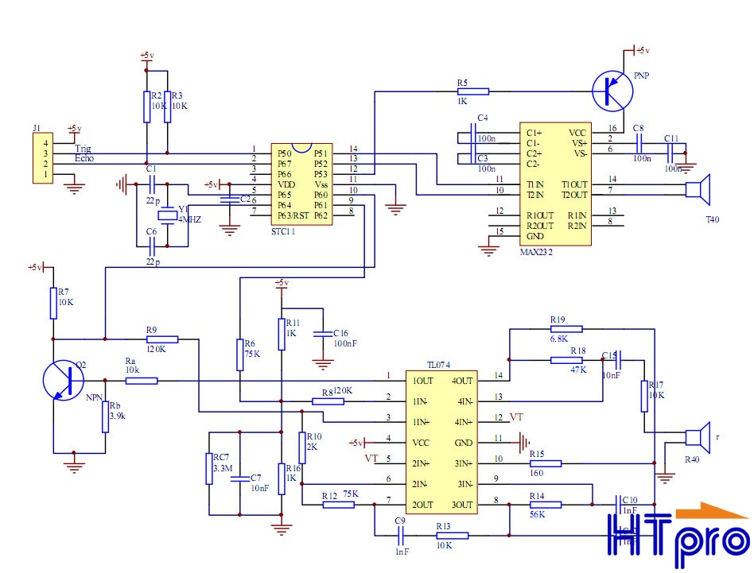

Quay lại Danh sách Dự án

Lập trình Xe tự hành (Autonomous Vehicle)
Dự án sử dụng vi điều khiển và các cảm biến thông minh để lập trình cho xe di chuyển tự động, tập trung vào kỹ năng lập trình, tư duy logic và ứng dụng công nghệ vào thực tế.
I. Khoa học (Science) & Điện tử (Electronics)
1. Cơ sở Cảm biến - Thu thập Dữ liệu Môi trường
Để xe có thể "nhìn" và tương tác với môi trường, nó cần các cảm biến. Phần này khám phá nguyên lý hoạt động vật lý của chúng:
- Cảm biến Siêu âm (Ultrasonic): Dùng sóng siêu âm để đo khoảng cách, dựa trên nguyên lý tốc độ âm thanh và thời gian phản xạ (Time of Flight - ToF).
- Cảm biến Hồng ngoại (IR): Dùng tia hồng ngoại để nhận biết vật cản hoặc dò đường (Line Following), dựa trên độ phản xạ ánh sáng.
- Con quay hồi chuyển (Gyroscope): Đo tốc độ góc, giúp xe ổn định hướng đi và nhận biết độ nghiêng.
Ứng dụng trong EV thực tế: Trong xe thương mại (Level 3-5), các cảm biến này được thay thế bằng công nghệ cao hơn như LiDAR,Radar (sử dụng hiệu ứng Doppler) và Camera Vision (Xử lý ảnh).

(Sơ đồ mô tả cách cảm biến siêu âm đo khoảng cách)
2. Vi điều khiển (Microcontroller) - Bộ não của xe
Vi điều khiển (như Arduino hoặc Raspberry Pi) nhận tín hiệu từ cảm biến và đưa ra lệnh điều khiển cho động cơ:
- Đọc và Xử lý Dữ liệu: Chuyển đổi tín hiệu tương tự (Analog) từ cảm biến sang tín hiệu số (Digital) để xử lý.
- Bộ Điều khiển Vòng kín (Closed-Loop Control): Vi điều khiển liên tục so sánh trạng thái mong muốn (ví dụ: đi thẳng) với trạng thái thực tế (được đo bởi cảm biến) và điều chỉnh tốc độ động cơ để giữ cho xe đi đúng hướng.
II. Kỹ thuật (Engineering) & Lập trình (Technology) ứng dụng
1. Thuật toán và Lập trình Điều khiển (Control Algorithm)
Phần cốt lõi của dự án là thiết kế thuật toán điều khiển cho xe:
- Tư duy Logic (If-Else Logic): Lập trình các điều kiện đơn giản như: "Nếu phát hiện vật cản phía trước (cảm biến siêu âm), thì Dừng lại hoặc Rẽ sang Trái/Phải."
- Vòng lặp và Tối ưu hóa: Xây dựng các vòng lặp (Loop) để xe liên tục kiểm tra môi trường và điều chỉnh. Người học có thể áp dụng thuật toán PID Controller cơ bản để làm mịn quá trình điều khiển.
- Phân tích Dữ liệu: Ghi nhận và phân tích dữ liệu cảm biến để hiệu chỉnh thuật toán, giúp xe hoạt động chính xác và hiệu quả hơn.
2. Kết nối Cơ khí và Điện tử
Dự án này là sự kết hợp giữa thiết kế cơ khí và lập trình điện tử:
- Lắp ráp và Tối ưu hóa: Đảm bảo vị trí lắp đặt cảm biến (góc nhìn, độ cao) là tối ưu để thu thập dữ liệu chính xác nhất.
- Tương tác Phần cứng/Phần mềm: Hiểu rõ giao tiếp giữa các chân tín hiệu (I/O Pins) của vi điều khiển với mạch điều khiển động cơ và cảm biến.
- Tầm nhìn Công nghệ Tương lai: Công nghệ xe tự hành (Self-Driving) đang định hình lại ngành ô tô. Dự án nhỏ này cung cấp nền tảng cơ bản về cách các hệ thống lớn hoạt động: Cảm nhận (Sensing) -> Xử lý (Processing) -> Hành động (Actuating).